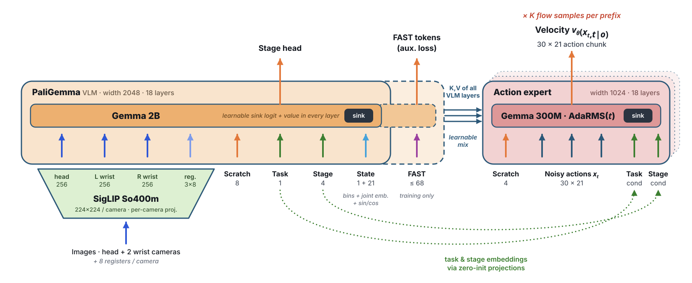
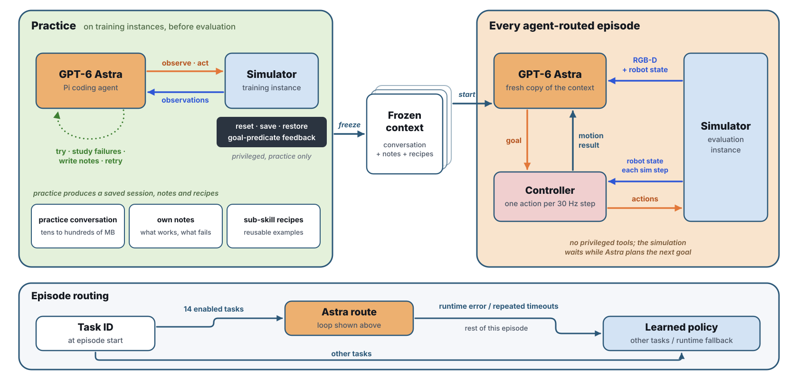

The 2026 BEHAVIOR Challenge doubled in size to 100 household tasks. Our modified π0.5 policy won last year’s challenge. This year, we extended it into one learned policy for all tasks. Key changes were aligning stages with skill annotations, matching actions to teleoperation controls, excluding demonstration frames after task success, and lowering training variance.
We also developed an agentic approach: a GPT-6 Astra agent that controls the robot through observation and motion tools, starting each evaluation from a frozen copy of its practice on training instances.
Challenge
Training Examples
Each task comes with 200 demonstrations recorded via teleoperation. Video: robot head camera 8× speed.
The Challenge includes 100 tasks set in multiple house-like environments. The main difficulties are:
- Long-horizon execution: Human demonstrations average 5.9 minutes; evaluation allows up to 1.5× each task’s mean human duration.
- Bimanual manipulation: Coordinated control of two 7-DOF arms with parallel jaw grippers.
- Mobile navigation: Operation in realistic indoor and outdoor environments.
- Non-Markovian states: Many states are visually ambiguous. Without memory of past actions or explicit stage tracking, the policy cannot distinguish between these states and may take incorrect actions.
- No recovery demonstrations: The training set contains only successful demonstrations, spanning a very narrow manifold of possible trajectories.
- Data: Each task provides 200 demonstrations. Public evaluation uses 10 additional instances per task.
- High compute requirements: Training on all 1,950 hours of data takes weeks, and full evaluation across all 100 tasks takes several days.
Method
Hover or tap the outlined parts of each figure for details.
VLA

Agentic

Results
| Rank | Team | Affiliation | Method | Q Score | Full-task SR |
|---|---|---|---|---|---|
| 1 | The North Star | Huawei Noah EAI Team | Hiearchical Physical RSI | 0.683 Verified | 48.2% Verified |
| 2 | IF1001 | Intellifusion | VLA WAM | 0.615 Verified | 41.2% Verified |
| 3 | Cyber | Xiaomi Robotics | WAM | 0.596 Verified | 39.6% Verified |
| 4 | Anyverse | Anyverse-Autolab | A²MEAS | 0.498 Verified | 32.0% Verified |
| 5 | Autolab | Anyverse-Autolab | A²WLA | 0.495 Verified | 30.9% Verified |
| 6 | XYRobot | Beijing XY Robot Technology Co., Ltd. | VLA+RSI | 0.484 Verified | 28.9% Verified |
| 7 | asteroid | CLab | Agent + WAM | 0.514 Self-reported | 30.8% Self-reported |
| 8 | Tasman3001 | Ambarella, Inc. | VLA+RSI | 0.481 Self-reported | 30.4% Self-reported |
| 9 | Robot Learning Collective | Independent | Modified PI0.5 and Astra | 0.446 Self-reported | 27.3% Self-reported |
| 10 | VGI-SKT | SNU / SKT | VLA | 0.445 Self-reported | 22.3% Self-reported |
| … | |||||
Summary
π0.5 results by task
Loading task results…